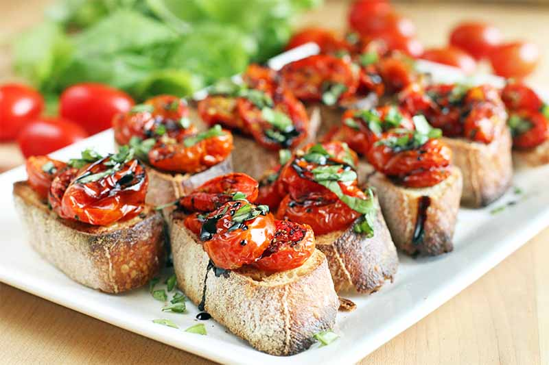

Balsamic Bruschetta

Description
Bruschetta is a classic Italian appetizer that is easy to make at home. Toasted bread is topped with tomatoes, Parmesan cheese, garlic, and fresh basil.
Use a high-quality balsamic vinegar for best results.
Ingredients
- 1 loaf French bread, cut into 1/4-inch slices
- 1 tablespoon extra-virgin olive oil
- 8 roma (plum) tomatoes, diced
- ⅓ cup chopped fresh basil
- 1 ounce Parmesan cheese, freshly grated
- 2 cloves garlic, minced
- 1 tablespoon good quality balsamic vinegar
- 2 teaspoons extra-virgin olive oil
- ¼ teaspoon kosher salt
- ¼ teaspoon freshly ground black pepper
Steps
- Preheat oven to 400 degrees F (200 degrees C). Brush bread slices on both sides lightly with 1 tablespoon oil and place on large baking sheet. Toast bread until golden, 5 to 10 minutes, turning halfway through.
- Meanwhile, toss together tomatoes, basil, Parmesan cheese, and garlic in a bowl. Mix in balsamic vinegar, 2 teaspoons olive oil, kosher salt, and pepper.
- Spoon tomato mixture onto toasted bread slices and serve immediately.
Back to homepage